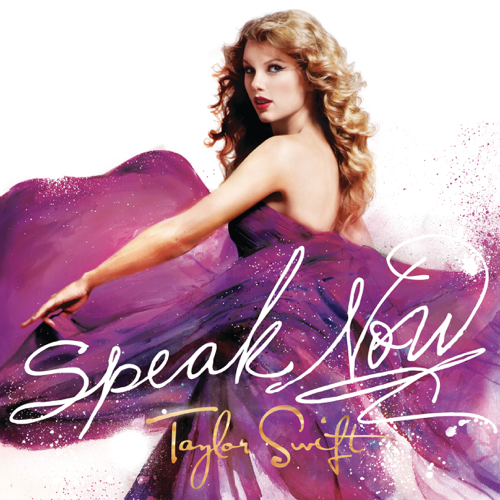
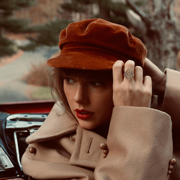

{kind=link}


.png)
This is a webpage for Swifties to learn about Taylor Swift, her interests, and some fun facts about her!
"Be like a snake - only bite when someone steps on you." - Taylor Swift
Taylor Allison Swift was born December 13, 1989 in West Reading, Pennslyvania. She is an American pop and country music singer-songwriter. Taylor Swift showcased her passion for music at an early age starting with theatre and soon her first performance at the Philadelphia 76ers basketball game. Soon after, she began writing music and learned to play the guitar. At the age of thirteen, she moved to Tennessee, so that she could devote her time to country music. She released her first single, "Tim McGraw" which was a huge success and she was offered to open for the Rascal Flatts at sixteen. Her career in the music industry skyrocketed and she is now one of the most famous singers in the world with her vast discography of 206 songs within a multitude of genres.
| Order | Album Title | Album Cover | Most Popular Song |
|---|---|---|---|
| 1 | Taylor Swift | |
"Our Song" |
| 2 | Fearless | |
"Love Story" |
| 3 | Speak Now |  | "Enchanted" |
| 4 | Red | |
"We Are Never Ever Getting Back Together" |
| 5 | 1989 | |
"Blank Space" |
| 6 | Reputation | |
"Look What You Made Me Do" |
| 7 | Lover | |
"ME!" |
| 8 | Folklore | |
"exile" |
| 9 | Evermore | "willow" | |
| 10 | Fearless (Taylor's Version) | |
"Love Story (Taylor's Version)" |
| 11 | Red (Taylor's Version) |  | "All Too Well(Ten Minute Version)(Taylor's Version)(From The Vault)" |
When Taylor Swift first started her career in music, she signed to Big Machine Records in 2005. As with many musicians’ contracts, Big Machine Records owned the masters, or original recordings, of Taylor's first six albums, even when the singer moved on to Universal’s Republic Records in 2018. As with many musicians’ contracts, Big Machine Records owned the masters, or original recordings, of Taylor Swift's first six albums, even when the singer moved on to Universal’s Republic Records in 2018. Taylor's has stated that she has been repeatedly bullied by Mr Braun, and therefore publicly came out against the sale of her masters to him. Taylor Swift believes that “artists should own their own work for so many reasons”, as written in an Instagram post earlier this year. As a result, Taylor decided to re-record her old albums, so that fans can still listen to her music, while she can still earn money from them. So far, she has released Fearless (Taylor's Version) and Red (Taylor's Version) which have already surpassed the original recordings despite being made public for a shorter time.
.png){kind=link}